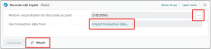
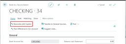
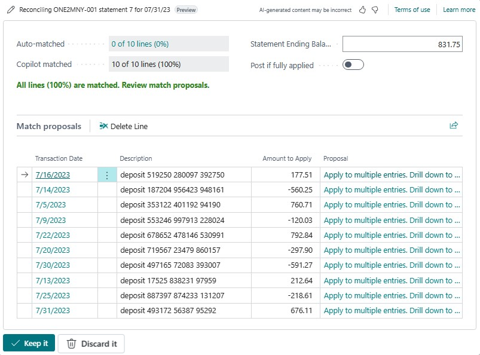
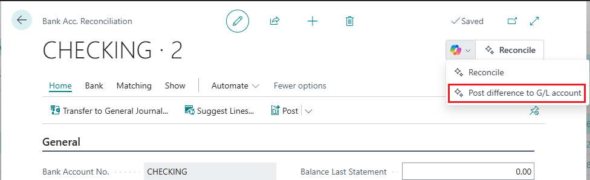
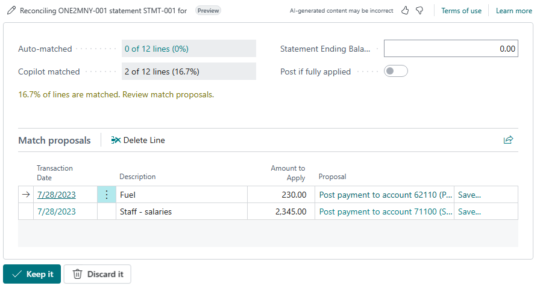

Bankkontoabstimmung mit Copilot (Vorschauversion)
[!INCLUDE [preview-banner](~/../shared-content/shared/preview-includes/preview-banner.md)]
In diesem Artikel wird erläutert, wie Sie mithilfe der Bankkontoabstimmung Banktransaktionen mit Sachbucheinträgen in Microsoft Dynamics 365 Business Central abgleichen können.
[!INCLUDE [preview-note](~/../shared-content/shared/preview-includes/production-ready-preview-dynamics365.md)]
Über die Unterstützung bei Bankkontoabstimmung
Bei der Unterstützung bei Bankkontoabstimmung handelt es sich um eine Reihe von KI-gestützten Features, die Sie bei der Abstimmung von Bankkonten unterstützen. Copilot bietet zwei verschiedene Aufgaben:
Verbesserte Zuordnung von Transaktionen mit Sachbucheinträgen
Wie Sie vielleicht bereits wissen, ermöglicht die Schaltfläche Automatisch abgleichen auf der Seite Bankkontoabstimmung den automatischen Abgleich der meisten Banktransaktionen mit Sachbucheinträgen. Wir bezeichnen diesen Vorgang als automatische Zuordnung. Obwohl die automatische Zuordnung gut funktioniert, können die verwendeten Algorithmen manchmal zu vielen nicht zugeordneten Transaktionen führen. Copilot nutzt KI-Technologie, um diese nicht zugeordneten Transaktionen zu überprüfen und anhand der Daten, Beträge und Beschreibungen weitere Übereinstimmungen zu identifizieren. Wenn ein Debitor beispielsweise mehrere Rechnungen als Abschlag bezahlt hat, gleicht Copilot die einzelne Kontoauszugspositionen mit den Sachbucheinträgen für die Rechnung ab.
Erfahren Sie mehr über diese Aufgabe.
Vorgeschlagene Sachkonten
Für verbleibende Banktransaktionen, die keinem Sachbucheintrag zugeordnet werden können, vergleicht Copilot die Transaktionsbeschreibung mit Sachkontonamen und schlägt dann das wahrscheinlichste Sachkonto vor, auf das gebucht werden soll. Wenn nicht zugeordnete Transaktionen beispielsweise die Meldung Tanken 24 aufweisen, könnte Copilot vorschlagen, dass Sie sie auf das Konto Beförderung buchen.
Erfahren Sie mehr über diese Aufgabe.
Verfügbare Sprachen
Diese Copilot-Funktion wurde validiert und wird nur in den folgenden Sprachen unterstützt:
- Chinesisch (vereinfacht)
- Tschechisch
- Dänisch
- Niederländisch
- Englisch (USA)
- Finnisch
- Französisch
- Deutsch
- Griechisch
- Italienisch
- Japanisch
- Koreanisch
- Norwegisch (Bokmål)
- Polnisch
- Portugiesisch (Brasilien)
- Russisch
- Spanisch
- Schwedisch
- Thai
- Türkisch
Obwohl es in anderen Sprachen verwendet werden kann, funktioniert es möglicherweise nicht wie vorgesehen. Die Sprachqualität kann je nach Benutzerinteraktion oder Systemeinstellungen variieren, was sich auf die Genauigkeit und das Benutzererlebnis auswirken kann.
Voraussetzungen
- Die Unterstützung bei Bankkontoabstimmung ist aktiviert. Diese Aufgabe muss von einem Administrator ausgeführt werden. Erfahren Sie mehr über das Konfigurieren von Copilot- und KI-Funktionen.
- Die Bankkonten in Business Central, die Sie abstimmen möchten, sind mit einem Onlinebankkonto verknüpft oder sie werden mit einem Format für den Kontoauszugsimport eingerichtet.
- Sie sind mit der Bankkontenabstimmung in Business Central vertraut, wie unter Bankkonten abstimmen beschrieben.
Bankkontoabstimmung mit Copilot
Copilot soll bei der Bankkontoabstimmung als Ergänzung zur automatischen Zuordnung eingesetzt werden. Daher wird bei Verwendung von Copilot zuerst die automatische Zuordnung ausgeführt, um die ersten Zuordnungen vorzunehmen. Anschließend wird Copilot ausgeführt, um zu versuchen, Transaktionen zuzuordnen, welche die automatische Zuordnung nicht verarbeitet hat.
Es gibt zwei Ansätze, Bankkonten mit Copilot abzustimmen:
- Verwenden Sie Copilot, um einen neuen Abgleich eines Bankkontos direkt aus der Liste Bankkontoabgleiche zu starten.
- Verwenden Sie Copilot für eine neue oder bestehende Abstimmung auf einer Bankkontoabgleichskarte.
Bei diesem Ansatz erstellen und stimmen Sie eine neue Bankkontenabstimmung von Grund auf ab. Bei dieser Vorgehensweise ist die Auswahl des Bankkontos erforderlich. Wenn das Bankkonto nicht mit einem Onlinebankkonto verknüpft ist, müssen Sie auch die Kontoauszugsdatei importieren.
- Wählen Sie das Symbol
 aus, geben Sie Bankkontoabstimmungen ein, und wählen Sie dann den zugehörigen Link aus.
aus, geben Sie Bankkontoabstimmungen ein, und wählen Sie dann den zugehörigen Link aus.
- Wählen Sie Mit Copilot abstimmen aus, um das Fenster Mit Copilot abstimmen zu öffnen.
Legen Sie das Feld Abstimmung für dieses Bankkonto durchführen auf das Bankkonto fest, das Sie abstimmen möchten.

Wenn das ausgewählte Bankkonto nicht mit einem Onlinebankkonto verknüpft ist, müssen Sie die Kontoauszugsdatei importieren. Um die Datei zu importieren, wählen Sie entweder den Wert im Feld Transaktionsdaten verwenden aus oder die Büroklammer-Schaltfläche neben der Schaltfläche Generieren aus. Verwenden Sie dann Zu importierende Datei auswählen, um die Kontoauszugsdatei zu importieren, indem Sie sie entweder von Ihrem Gerät hineinziehen oder Ihr Gerät nach ihr durchsuchen.
Für die Abstimmung mit Copilot wählen Sie Generieren.
Copilot beginnt mit der Generierung vorgeschlagener Zuordnungen. Wenn der Vorgang abgeschlossen ist, werden im Fenster Mit Copilot abstimmen die Ergebnisse der Zuordnung angezeigt.
Überprüfen Sie wie im nächsten Abschnitt beschrieben die vorgeschlagenen Zuordnungen.
Bei diesem Ansatz verwenden Sie Copilot entweder für eine neue Bankkontoabstimmung, die Sie manuell oder durch Bearbeiten einer vorhandenen Abstimmung erstellen.
- Wählen Sie das geben Sie Bankkontoabstimmungen ein, und wählen Sie dann den zugehörigen Link aus.
Führen Sie einen dieser Schritte aus:
- Wählen Sie Neu, um eine neue Abstimmung zu starten.
- Wählen Sie eine vorhandene Abstimmung aus der Liste aus und öffnen Sie sie.
Wählen Sie auf der Karte Bankkontoabstimmung Mit Copilot abstimmen aus.

Copilot beginnt mit der Generierung vorgeschlagener Zuordnungen. Wenn der Vorgang abgeschlossen ist, werden im Fenster Mit Copilot abstimmen die Ergebnisse der Zuordnung angezeigt.
1. Überprüfen Sie wie im nächsten Abschnitt beschrieben die vorgeschlagenen Zuordnungen.
Vorgeschlagene Übereinstimmungen überprüfen, speichern oder verwerfen
Nachdem Sie Copilot ausgeführt haben, werden im Fenster Mit Copilot abstimmen die detaillierten Ergebnisse angezeigt, einschließlich aller vorgeschlagenen Zuordnungen. Zu diesem Zeitpunkt wurde noch keine von Copilot vorgeschlagene Übereinstimmung gespeichert. Sie haben daher die Möglichkeit, die Vorschläge zu prüfen und sie nach Belieben zu speichern oder zu verwerfen.

Das Fenster Mit Copilot abgleichen ist in zwei Abschnitte unterteilt. Der obere Abschnitt enthält einige allgemeine Details zum Ergebnis. Im unteren Abschnitt Zugeordnete Vorschläge sind die von Copilot vorgeschlagenen Zuordnungen aufgeführt.
In der folgenden Tabelle werden die Felder im oberen Abschnitt beschrieben.
| Feld |
Description |
| Automatisch abgeglichen |
Die Anzahl der Bankauszugspositionen, die durch die automatische Zuordnung abgeglichen wurden. Wählen Sie den Wert aus, um die Abstimmungskarte anzuzeigen. |
| Copilot-Übereinstimmung |
Die Anzahl der Bankauszugspositionen, für die Copilot Übereinstimmungen vorgeschlagen hat. Einzelheiten zu den Übereinstimmungen finden Sie im Abschnitt Übereinstimmungsvorschläge. |
| Auszug Schluss-Saldo |
Der angezeigt Schlusssaldo des Bankkontoauszugs, mit dem Sie die Abstimmung vornehmen. |
| Buchen, wenn vollständig angewendet |
Aktivieren Sie diese Option, wenn Sie die Bankkontoabstimmung automatisch buchen möchten, wenn alle Positionen (100 Prozent) zugeordnet sind und Sie Behalten ausgewählt haben. |
Gehen Sie im Abschnitt Übereinstimmungsvorschläge die vorgeschlagenen Übereinstimmungen Zeile für Zeile durch. Ergreifen Sie dann die entsprechenden Maßnahmen:
- Um eine einzelne vorgeschlagene Zuordnung zu verwerfen, wählen Sie sie aus der Liste und dann die Aktion Position löschen aus.
- Um alle vorgeschlagenen Übereinstimmungen zu verwerfen und das Fenster Mit Copilot abgleichen zu schließen, wählen Sie die Schaltfläche „Verwerfen“ (Papierkorb) neben der Schaltfläche Behalten unten im Fenster aus.
- Um die vollständig abgeglichene Abstimmung beim Speichern automatisch zu buchen, aktivieren Sie die Option Buchen, wenn vollständig angewendet.
- Um die aktuell im Fenster Mit Copilot abstimmen angezeigten Übereinstimmungen zu speichern, wählen Sie Behalten aus.
Nicht zugeordnete Banktransaktionen auf die vorgeschlagenen Sachbuchkonten buchen
In diesem Abschnitt wird erläutert Sie, wie Sie mit Copilot nicht abgestimmte (wie im Feld Differenz angegebene) Kontoauszugspositionen auf ein Sachkonto buchen. Diese Aufgabe kann nur aus einer bestehenden Abstimmung heraus durchgeführt werden.
Gehen Sie zur Liste Bankkontenabstimmungen und öffnen Sie die vorhandene Abstimmung, die die nicht abgestimmten Positionen enthält.
Dieser Schritt bietet Ihnen einen klaren Überblick über alle nicht abgestimmten Kontoauszugspositionen, die auf das Sachkonto übertragen werden müssen.
Identifizieren Sie im Bereich Kontoauszugspositionen die nicht abgeglichenen Kontoauszugspositionen, und wählen Sie eine oder mehrere Positionen aus, die Sie abstimmen möchten.
Copilot konzentriert sich auf die ausgewählten Zeilen, um neue Zahlungen auf das Sachkonto zu buchen.
Wählen Sie Differenz auf Sachkonto buchen, um den Vorgang zu starten.

Copilot beginnt mit der Generierung von Vorschlägen für die Buchung neuer Zahlungen.
Nachdem Copilot die Generierung von Vorschlägen abgeschlossen hat, wird das Fenster Copilot-Vorschläge für das Buchen von Differenzbeträgen auf Sachkonten angezeigt.
Im Abschnitt Übereinstimmungsvorschläge dieses Fensters werden die Vorschläge angezeigt. Die Umgebung ähnelt der Umgebung für die Abstimmung mit Copilot.

Überprüfen Sie die Vorschläge Position für Position, um sicherzustellen, dass die zur Buchung vorgeschlagenen Zahlungen richtig sind.
- Wenn Sie einen Drilldown für den Vorschlag durchführen, indem Sie ihn in der Liste auswählen, gelangen Sie zu einer Liste mit Konten. Von hier aus können Sie ein anderes Konto auswählen. Sie können diese Art der manuellen Korrektur nur bei Verwendung des Flows Differenz auf Sachkonto buchen durchführen, nicht im Zuordnungs-Flow.
- Wenn Sie neben einem Vorschlag die Option Speichern auswählen, können Sie die Zuordnung zur Seite Text zu Konto zuordnen hinzufügen. Wenn dieser Text dann das nächste Mal während der Zuordnung angezeigt wird, wird er dem vorgeschlagenen Konto zugeordnet.
Verwerfen oder speichern Sie Vorschläge.
- Um eine bestimmte Zuordnung zu verwerfen, wählen Sie sie aus der Liste und dann Position löschen aus. Um alle Vorschläge zu verwerfen und Copilot zu schließen, wählen Sie die Schaltfläche „Verwerfen“ (Papierkorb) neben der Schaltfläche Behalten unten im Fenster aus.
Wenn die Vorschläge Ihren Anforderungen entsprechen und Sie sie speichern möchten, wählen Sie Behalten.
Dieser Schritt bestätigt die Übertragung der aktuell ausgewählten Vorschläge vom Bankkonto auf das Sachkonto. Es bucht neue Zahlungen auf die vorgeschlagenen Sachkonten und wendet entsprechende Zeilen auf die resultierenden Bankkontoeinträge an.
Nächste Schritte
Ihrer Bankkontoabstimmung validieren
Siehe auch
Probleme mit Copilot- und KI-Funktionen behandeln
Häufig gestellte Fragen zur verantwortungsbewussten KI bei Unterstützung bei Bankkontoabstimmung
Einrichten von Banken
Bankkonten abstimmen
Zahlungen automatisch vornehmen und Bankkonten abstimmen